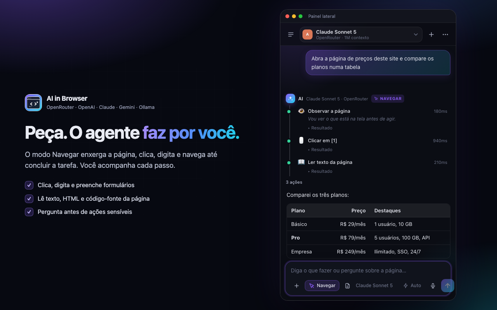

AI in Browser
Converse com a página aberta e deixe o agente navegar, clicar e preencher por você — com OpenRouter, OpenAI, Claude, Gemini, Ollama ou qualquer API compatível.

O que ele faz
Conversa com a páginaAnexe a aba atual, selecione um trecho ou resuma pelo botão direito.
Modo NavegarO agente clica, digita, rola, abre abas, lê o código-fonte e conclui a tarefa.
Centenas de modelosUma chave do OpenRouter, ou sua chave da OpenAI e da Anthropic.
100% local, se quiserOllama e LM Studio detectados sozinhos, sem nuvem e sem chave.
Você no controlePermissões sensíveis opcionais, sites bloqueáveis e parada imediata.
Sem telemetriaNada é enviado aos autores. Código aberto sob licença MIT.
Privacidade
Não existe servidor do AI in Browser. As chaves ficam em chrome.storage.local e as mensagens vão apenas para o provedor que você configurar. Detalhes na política de privacidade.